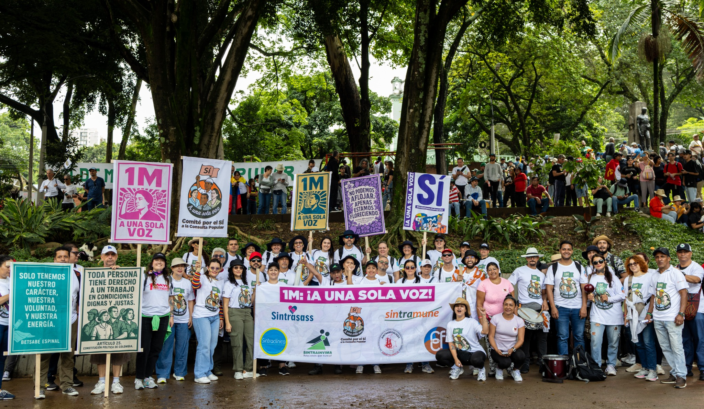

Incidencia sindical
Organización, pedagogía y unidad para defender derechos laborales.
Desde CFC acompañamos procesos de participación pública donde sindicatos, organizaciones sociales y ciudadanía se encuentran para construir agenda colectiva.
